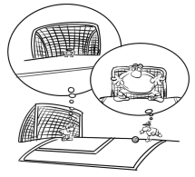

第 1 题 #
1.A. nativesB. inhabitantsC. peoplesD. individuals
点击查看答案
此题暂无可用答案。
考研英语 · questions · 2007
题号和章节目录由结构化数据生成。选项按卷面字母顺序显示；原标记保留在 JSON 中。
Read the following text. Choose the best word(s) for each numbered blank and mark A, B, C or D on the ANSWER SHEET 1. (10 points)
By 1830 the former Spanish and Portuguese colonies had become independent nations. The roughly 20 million 1 of these nations looked 2 to the future. Born in the crisis of the old regime and Iberian colonialism, many of the leaders of independence 3 the ideals of representative government, careers 4 to talent, freedom of commerce and trade, the 5 to private property, and a belief in the individual as the basis of society. 6 there was a belief that the new nations should be sovereign and independent states, large enough to be economically viable and integrated by a 7 set of laws.
On the issue of 8 of religion and the position of the Church, 9 , there was less agreement 10 the leadership. Roman Catholicism had been the state religion and the only one 11 by the Spanish crown. 12 most leaders sought to maintain Catholicism 13 the official religion of the new states, some sought to end the 14 of other faiths. The defense of the Church became a rallying 15 for the conservative forces.
The ideals of the early leaders of independence were often egalitarian, valuing equality of everything. Bolivar had received aid from Haiti and had 16 in return to abolish slavery in the areas he liberated. By 1854 slavery had been abolished everywhere except Spain’s 17 colonies. Early promises to end Indian tribute and taxes on people of mixed origin came much 18 because the new nations still needed the revenue such policies
19 . Egalitarian sentiments were often tempered by fears that the mass of the population
was 20 self-rule and democracy.
此题暂无可用答案。
此题暂无可用答案。
此题暂无可用答案。
此题暂无可用答案。
此题暂无可用答案。
此题暂无可用答案。
此题暂无可用答案。
此题暂无可用答案。
此题暂无可用答案。
此题暂无可用答案。
此题暂无可用答案。
此题暂无可用答案。
此题暂无可用答案。
此题暂无可用答案。
此题暂无可用答案。
此题暂无可用答案。
此题暂无可用答案。
此题暂无可用答案。
此题暂无可用答案。
此题暂无可用答案。
Read the following four texts. Answer the questions below each text by choosing A, B, C or D. Mark your answers on the ANSWER SHEET 1. (40 points)
If you were to examine the birth certificates of every soccer player in 2006’s World Cup tournament, you would most likely find a noteworthy quirk: elite soccer players are more likely to have been born in the earlier months of the year than in the later months. If you then examined the European national youth teams that feed the World Cup and professional ranks, you would find this strange phenomenon to be even more pronounced.
What might account for this strange phenomenon? Here are a few guesses: a) certain astrological signs confer superior soccer skills; b) winter-born babies tend to have higher oxygen capacity, which increases soccer stamina; c) soccer-mad parents are more likely to conceive children in springtime, at the annual peak of soccer mania; d) none of the above.
Anders Ericsson, a 58-year-old psychology professor at Florida State University, says he believes strongly in “none of the above.” Ericsson grew up in Sweden, and studied nuclear engineering until he realized he would have more opportunity to conduct his own research if he switched to psychology. His first experiment, nearly 30 years ago, involved memory: training a person to hear and then repeat a random series of numbers. “With the first subject, after about 20 hours of training, his digit span had risen from 7 to 20,” Ericsson recalls. “He kept improving, and after about 200 hours of training he had risen to over 80 numbers.”
This success, coupled with later research showing that memory itself is not genetically determined, led Ericsson to conclude that the act of memorizing is more of a cognitive exercise than an intuitive one. In other words, whatever inborn differences two people may exhibit in their abilities to memorize, those differences are swamped by how well each person “encodes” the information. And the best way to learn how to encode information meaningfully, Ericsson determined, was a process known as deliberate practice. Deliberate practice entails more than simply repeating a task. Rather, it involves setting specific goals, obtaining immediate feedback and concentrating as much on technique as on outcome.
Ericsson and his colleagues have thus taken to studying expert performers in a wide range of pursuits, including soccer. They gather all the data they can, not just performance statistics and biographical details but also the results of their own laboratory experiments with high achievers. Their work makes a rather startling assertion: the trait we commonly call talent is highly overrated. Or, put another way, expert performers — whether in memory or surgery, ballet or computer programming — are nearly always made, not born.
21. The birthday phenomenon found among soccer players is mentioned to ____
此题暂无可用答案。
22. The word “mania” (Paragraph 2) most probably means____
此题暂无可用答案。
23. According to Ericsson, good memory ____
此题暂无可用答案。
24. Ericsson and his colleagues believe that ____
此题暂无可用答案。
25. Which of the following proverbs is closest to the message the text tries to convey?
此题暂无可用答案。
For the past several years, the Sunday newspaper supplement Parade has featured a column called “Ask Marilyn.” People are invited to query Marilyn vos Savant, who at age 10 had tested at a mental level of someone about 23 years old; that gave her an IQ of 228 — the highest score ever recorded. IQ tests ask you to complete verbal and visual analogies, to envision paper after it has been folded and cut, and to deduce numerical sequences, among other similar tasks. So it is a bit confusing when vos Savant fields such queries from the average Joe (whose IQ is 100) as, what’s the difference between love and fondness? Or what is the nature of luck and coincidence? It’s not obvious how the capacity to visualize objects and to figure out numerical patterns suits one to answer questions that have eluded some of the best poets and philosophers.
Clearly, intelligence encompasses more than a score on a test. Just what does it mean to be smart? How much of intelligence can be specified, and how much can we learn about it from neurology, genetics, computer science and other fields?
The defining term of intelligence in humans still seems to be the IQ score, even though IQ tests are not given as often as they used to be. The test comes primarily in two forms: the Stanford-Binet Intelligence Scale and the Wechsler Intelligence Scales (both come in adult and children’s version). Generally costing several hundred dollars, they are usually given only by psychologists, although variations of them populate bookstores and the World Wide Web. Superhigh scores like vos Savant’s are no longer possible, because scoring is now based on a statistical population distribution among age peers, rather than simply dividing the mental age by the chronological age and multiplying by 100. Other standardized tests, such as the Scholastic Assessment Test (SAT) and the Graduate Record Exam (GRE), capture the main aspects of IQ tests.
Such standardized tests may not assess all the important elements necessary to succeed in school and in life, argues Robert J. Sternberg. In his article “How Intelligent Is Intelligence Testing?”, Sternberg notes that traditional tests best assess analytical and verbal skills but fail to measure creativity and practical knowledge, components also critical to problem solving and life success. Moreover, IQ tests do not necessarily predict so well once populations or situations change. Research has found that IQ predicted leadership skills when the tests were given under low-stress conditions, but under high-stress conditions, IQ was negatively correlated with leadership — that is, it predicted the opposite. Anyone who has toiled through SAT will testify that test-taking skill also matters, whether it’s knowing when to guess or what questions to skip.
26. Which of the following may be required in an intelligence test?
此题暂无可用答案。
27. What can be inferred about intelligence testing from Paragraph 3?
此题暂无可用答案。
28. People nowadays can no longer achieve IQ scores as high as vos Savant’s because ____
此题暂无可用答案。
29. We can conclude from the last paragraph that ____
此题暂无可用答案。
30. What is the author’s attitude towards IQ tests?
此题暂无可用答案。
During the past generation, the American middle-class family that once could count on hard work and fair play to keep itself financially secure has been transformed by economic risk and new realities. Now a pink slip, a bad diagnosis, or a disappearing spouse can reduce a family from solidly middle class to newly poor in a few months.
In just one generation, millions of mothers have gone to work, transforming basic family economics. Scholars, policymakers, and critics of all stripes have debated the social implications of these changes, but few have looked at the side effect: family risk has risen as well. Today’s families have budgeted to the limits of their new two-paycheck status. As a result, they have lost the parachute they once had in times of financial setback — a back-up earner (usually Mom) who could go into the workforce if the primary earner got laid off or fell sick. This “added-worker effect” could support the safety net offered by unemployment insurance or disability insurance to help families weather bad times. But today, a disruption to family fortunes can no longer be made up with extra income from an otherwise-stay-at-home partner.
During the same period, families have been asked to absorb much more risk in their retirement income. Steelworkers, airline employees, and now those in the auto industry are joining millions of families who must worry about interest rates, stock market fluctuation, and the harsh reality that they may outlive their retirement money. For much of the past year, President Bush campaigned to move Social Security to a savings-account model, with retirees trading much or all of their guaranteed payments for payments depending on investment returns. For younger families, the picture is not any better. Both the absolute cost of healthcare and the share of it borne by families have risen — and newly fashionable health-savings plans are spreading from legislative halls to Wal-Mart workers, with much higher deductibles and a large new dose of investment risk for families’ future healthcare. Even demographics are working against the middle class family, as the odds of having a weak elderly parent — and all the attendant need for physical and financial assistance — have jumped eightfold in just one generation.
From the middle-class family perspective, much of this, understandably, looks far less like an opportunity to exercise more financial responsibility, and a good deal more like a frightening acceleration of the wholesale shift of financial risk onto their already overburdened shoulders. The financial fallout has begun, and the political fallout may not be far behind.
31. Today’s double-income families are at greater financial risk in that ____
此题暂无可用答案。
32. As a result of President Bush’s reform, retired people may have ____
此题暂无可用答案。
33. According to the author, health-savings plans will ____
此题暂无可用答案。
34. It can be inferred from the last paragraph that ____
此题暂无可用答案。
35. Which of the following is the best title for this text?
此题暂无可用答案。
It never rains but it pours. Just as bosses and boards have finally sorted out their worst accounting and compliance troubles, and improved their feeble corporation governance, a new problem threatens to earn them — especially in America — the sort of nasty headlines that inevitably lead to heads rolling in the executive suite: data insecurity. Left, until now, to odd, low-level IT staff to put right, and seen as a concern only of data-rich industries such as banking, telecoms and air travel, information protection is now high on the boss’s agenda in businesses of every variety.
Several massive leakages of customer and employee data this year — from organizations as diverse as Time Warner, the American defense contractor Science Applications International Corp and even the University of California, Berkeley — have left managers hurriedly peering into their intricate IT systems and business processes in search of potential vulnerabilities.
“Data is becoming an asset which needs to be guarded as much as any other asset,” says Haim Mendelson of Stanford University’s business school. “The ability to guard customer data is the key to market value, which the board is responsible for on behalf of shareholders.” Indeed, just as there is the concept of Generally Accepted Accounting Principles (GAAP), perhaps it is time for GASP, Generally Accepted Security Practices, suggested Eli Noam of New York’s Columbia Business School. “Setting the proper investment level for security, redundancy, and recovery is a management issue, not a technical one,” he says.
The mystery is that this should come as a surprise to any boss. Surely it should be obvious to the dimmest executive that trust, that most valuable of economic assets, is easily destroyed and hugely expensive to restore — and that few things are more likely to destroy trust than a company letting sensitive personal data get into the wrong hands.
The current state of affairs may have been encouraged — though not justified — by the lack of legal penalty (in America, but not Europe) for data leakage. Until California recently passed a law, American firms did not have to tell anyone, even the victim, when data went astray. That may change fast: lots of proposed data-security legislation is now doing the rounds in Washington, D.C. Meanwhile, the theft of information about some 40 million credit-card accounts in America, disclosed on June 17th, overshadowed a hugely important decision a day earlier by America’s Federal Trade Commission (FTC) that puts corporate America on notice that regulators will act if firms fail to provide adequate data security.
36. The statement “It never rains but it pours” is used to introduce ____
此题暂无可用答案。
37. According to Paragraph 2, some organizations check their systems to find out ____
此题暂无可用答案。
38. In bringing up the concept of GASP the author is making the point that ____
此题暂无可用答案。
39. According to Paragraph 4, what puzzles the author is that some bosses fail to ____
此题暂无可用答案。
40. It can be inferred from Paragraph 5 that ____
此题暂无可用答案。
You are going to read a list of headings and a text about what parents are supposed to do to guide their children into adulthood. Choose a heading from the list A-G that best fits the meaning of each numbered part of the text (41-45). The first and last paragraphs of the text are not numbered. There are two extra headings that you do not need to use. Mark your answers on ANSWER SHEET 1. (10 points)
How Can a Parent Help?
Mothers and fathers can do a lot to ensure a safe landing in early adulthood for their kids. Even if a job’s starting salary seems too small to satisfy an emerging adult’s need for rapid content, the transition from school to work can be less of a setback if the start-up adult is ready for the move. Here are a few measures, drawn from my book Ready or Not, Here Life Comes, that parents can take to prevent what I call “work-life unreadiness”:
41. ________________________________________
You can start this process when they are 11 or 12. Periodically review their emerging strengths and weaknesses with them and work together on any shortcomings, like difficulty in communicating well or collaborating. Also, identify the kinds of interests they keep coming back to, as these offer clues to the careers that will fit them best.
此题暂无可用答案。
42. ________________________________________
Kids need a range of authentic role models — as opposed to members of their clique, pop stars and vaunted athletes. Have regular dinner-table discussions about people the family knows and how they got where they are. Discuss the joys and downsides of your own career and encourage your kids to form some ideas about their own future. When asked what they want to do, they should be discouraged from saying “I have no idea.” They can change their minds 200 times, but having only a foggy view of the future is of little good.
此题暂无可用答案。
43. ________________________________________
Teachers are responsible for teaching kids how to learn; parents should be responsible for teaching them how to work. Assign responsibilities around the house and make sure homework deadlines are met. Encourage teenagers to take a part-time job. Kids need plenty of practice delaying gratification and deploying effective organizational skills, such as managing time and setting priorities.
此题暂无可用答案。
44. ________________________________________
Playing video games encourages immediate content. And hours of watching TV shows with canned laughter only teaches kids to process information in a passive way. At the same time, listening through earphones to the same monotonous beats for long stretches encourages kids to stay inside their bubble instead of pursuing other endeavors. All these activities can prevent the growth of important communication and thinking skills and make it difficult for kids to develop the kind of sustained concentration they will need for most jobs.
此题暂无可用答案。
45. ________________________________________
They should know how to deal with setbacks, stresses and feelings of inadequacy. They should also learn how to solve problems and resolve conflicts, ways to brainstorm and think critically. Discussions at home can help kids practice doing these things and help them apply these skills to everyday life situations.
What about the son or daughter who is grown but seems to be struggling and wandering aimlessly through early adulthood? Parents still have a major role to play, but now it is more delicate. They have to be careful not to come across as disappointed in their child. They should exhibit strong interest and respect for whatever currently interests their fledgling adult (as naive or ill conceived as it may seem) while becoming a partner in exploring options for the future. Most of all, these new adults must feel that they are respected and supported by a family that appreciates them.
此题暂无可用答案。
Read the following text carefully and then translate the underlined segments into Chinese. Your translation should be written clearly on the ANSWER SHEET 2. (10 points)
The study of law has been recognized for centuries as a basic intellectual discipline in European universities. However, only in recent years has it become a feature of undergraduate programs in Canadian universities. (46) Traditionally, legal learning has been viewed in such institutions as the special preserve of lawyers, rather than a necessary part of the intellectual equipment of an educated person. Happily, the older and more continental view of legal education is establishing itself in a number of Canadian universities and some have even begun to offer undergraduate degrees in law.
If the study of law is beginning to establish itself as part and parcel of a general education, its aims and methods should appeal directly to journalism educators. Law is a discipline which encourages responsible judgment. On the one hand, it provides opportunities to analyze such ideas as justice, democracy and freedom. (47) On the other, it links these concepts to everyday realities in a manner which is parallel to the links journalists forge on a daily basis as they cover and comment on the news. For example, notions of evidence and fact, of basic rights and public interest are at work in the process of journalistic judgment and production just as in courts of law. Sharpening judgment by absorbing and reflecting on law is a desirable component of a journalist’s intellectual preparation for his or her career.
(48) But the idea that the journalist must understand the law more profoundly than an ordinary citizen rests on an understanding of the established conventions and special responsibilities of the news media. Politics or, more broadly, the functioning of the state, is a major subject for journalists. The better informed they are about the way the state works, the better their reporting will be. (49) In fact, it is difficult to see how journalists who do not have a clear grasp of the basic features of the Canadian Constitution can do a competent job on political stories.
Furthermore, the legal system and the events which occur within it are primary subjects for journalists. While the quality of legal journalism varies greatly, there is an undue reliance amongst many journalists on interpretations supplied to them by lawyers. (50) While comment and reaction from lawyers may enhance stories, it is preferable for journalists to rely on their own notions of significance and make their own judgments. These can only come from a well-grounded understanding of the legal system.
51. Directions:
Write a letter to your university library, making suggestions for improving its service. You should write about 100 words on ANSWER SHEET 2. Do not sign your own name at the end of the letter. Use “Li Ming” instead. Do not write the address. (10 points)
此题暂无可用答案。
52. Directions:
Write an essay of 160-200 words based on the following drawing. In your essay, you should
1) describe the drawing briefly,
2) explain its intended meaning, and then
3) support your view with an example/examples.
You should write neatly on ANSWER SHEET 2. (20 points)

此题暂无可用答案。